<무농약 토마토>

<농약 토마토>

<성장 촉진제 토마토>
세 토마토 중 가장 건강한 농산물인 <무농약 토마토>는 왜 혼자만 도로 땅에 묻혔을까요?
<무농약 토마토>
<농약 토마토>
<성장 촉진제 토마토>
세 토마토 중 가장 건강한 농산물인 <무농약 토마토>는 왜 혼자만 도로 땅에 묻혔을까요?
단지 모양이 특이하게 생긴
이었기 때문이였어요.
못생겼다는 이유만으로

못난이 농산물에 마우스를 올려 오해를 풀어보세요.
알고보면 판매에 지장이 없는 못난이 농산물, 버려지는 낭비를 어떻게 줄일 수 있을까요?
못난이 농산물을 활용하여 훌륭한 상품으로 재탄생 시키는
못난이 농산물의 좋은 가치를 나누며
저렴한 가격에 농산물을 판매해요.
아직 울퉁불퉁한 모양이 어색한 분들을 위해,
새로운 식품형태로 가공해 판매해요.
푸드 리퍼브 상품으로
땅에 파묻혔던 못난이 토마토를 구할 수 있어요.


저도 드디어! 멋쟁이 토마토 케찹이 되었어요!
다른 많은 친구들도 땅에 묻히지 않고
저처럼 멋진 농산물이 될 수 있도록..

앞으로 우리 못난이 농산물들을 꼭 기억하고 소비해주세요!